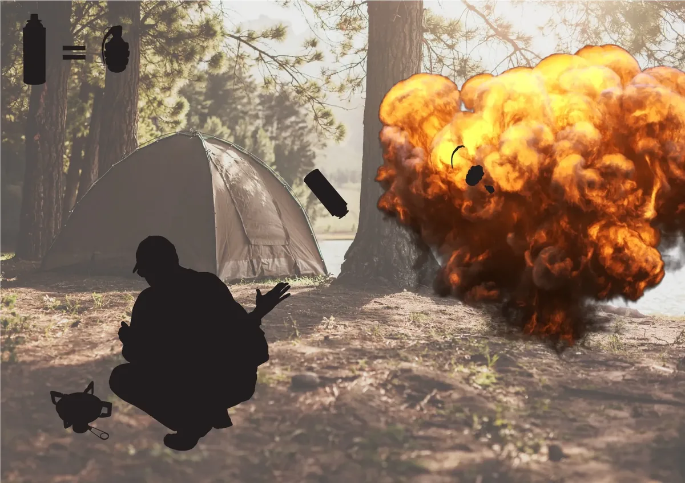
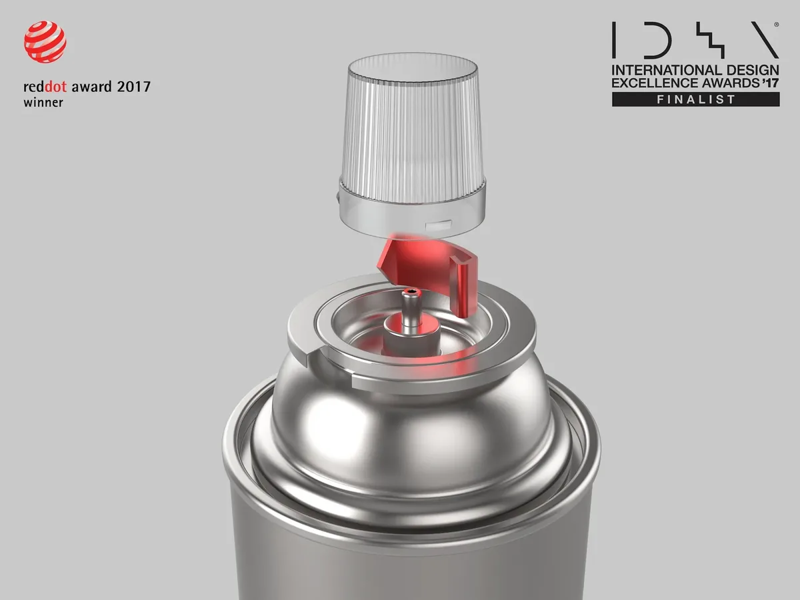
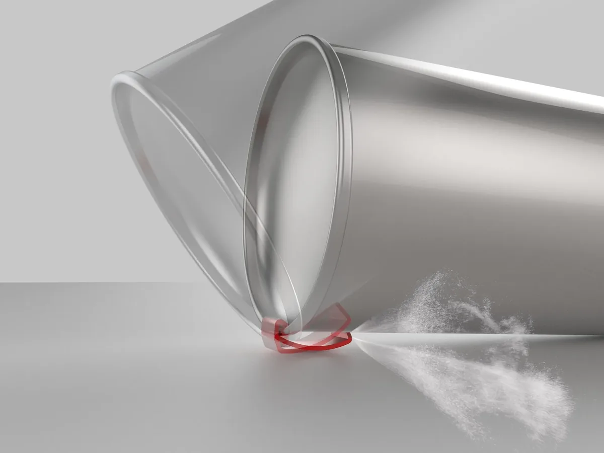
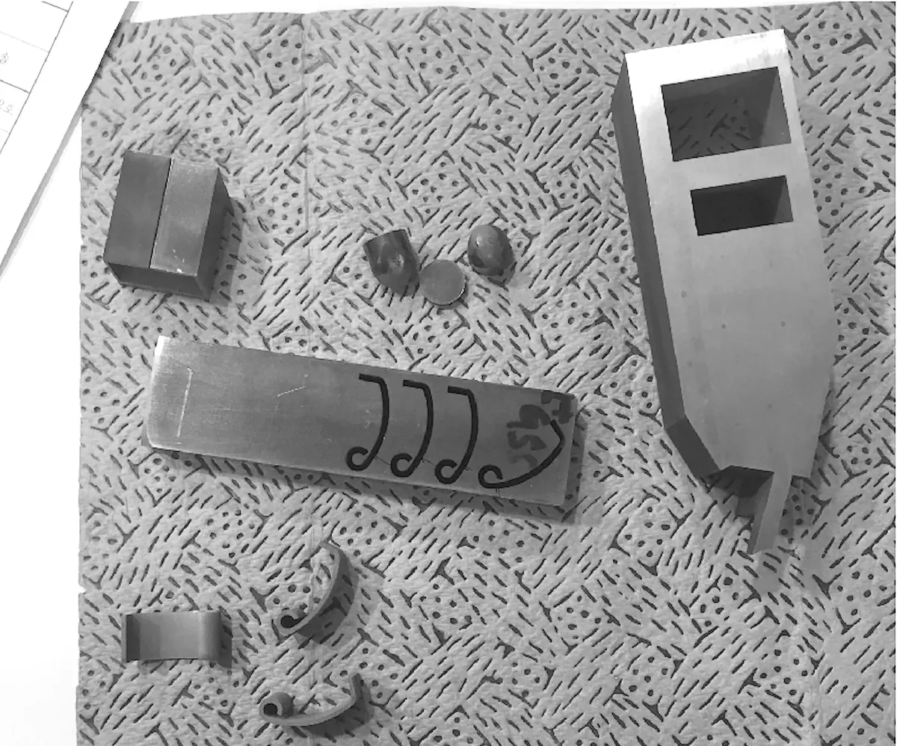
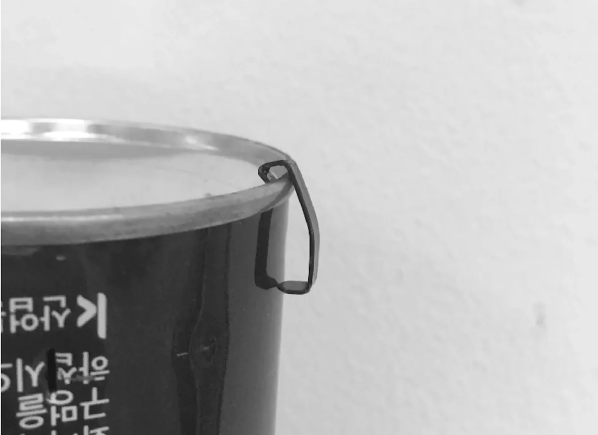
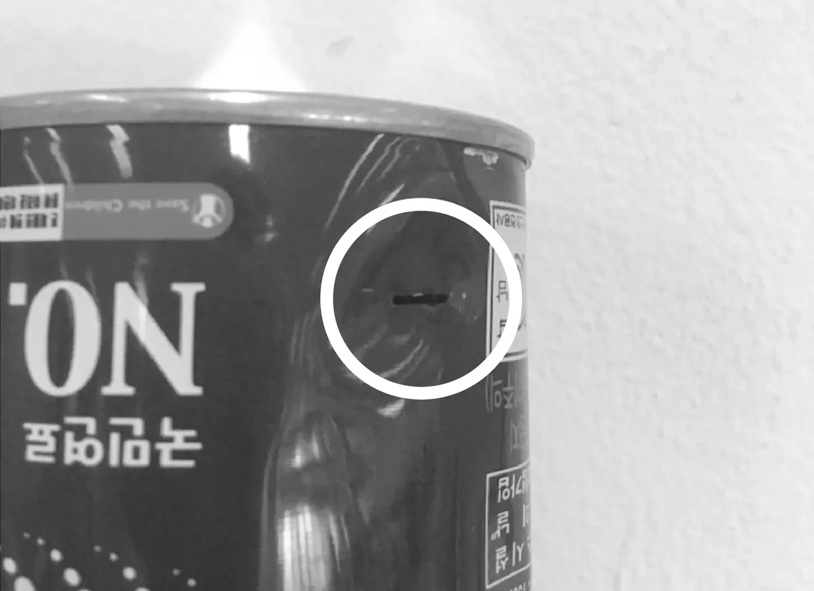

Butane gas canisters are among the most common types of gas containers, but recycling them is often inconvenient—and sometimes even dangerous.
To recycle them safely, a hole must be punctured to release pressure and any remaining gas, making the metal safe for disposal.
Most people need to carry a separate tool for this, but even that small inconvenience can discourage proper recycling.
This concept proposes a simple solution: a built-in metal clip in the canister itself.
Inexpensive to manufacture and easy to use, the clip punctures the can when struck against a flat surface.





